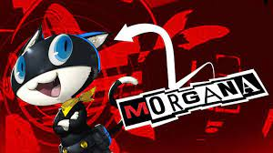

Final Project Proposal
Luke Thormeyer
(upadted 12/15/22)

I will be making a question asking website that will use different questions to ask the character and they will respond back with an awnser


I will be usimg javascript and html to make this happen.
Features
- Will have different buttons to ask the characters
- Will have different responces and reactions to the questions
- Images will change
- music will play when startng when loading the website
Future Features
- Want to add more questions
- More reactions and music to play
- animations instead of still images
Basic Technical Features
- Have function to when you selcet the option it will change the responces
- Pictures of the character and there responces
- have buttons that let you communicate to the character
Advanced Technical Features
- Different images and change the image instead of one still one
- sounds that play when selcted an option
- Music starting in the background